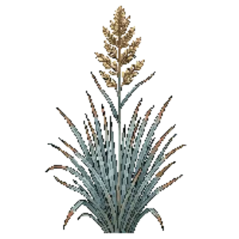

Indian Grass 'Sioux Blue'
Sorghastrum nutans 'Sioux Blue'

Indian Grass 'Sioux Blue' is a grass for focal point, structure, suited to full sun and clay, loam or sandy soil, flowering Aug, Sep, Oct.
| Type | Grass |
|---|---|
| Mature height | 150 cm |
| Spread | 75 cm |
| Aspect | full sun |
| Foliage | Deciduous |
| Hardiness | USDA 3a-9b |
| Pollinator-friendly | No |
| Pet-safe | Not confirmed |
Where to use it in a border
At around 150 cm, it sits best toward the back of a border, or on its own as a focal point with room around it. Give it about 75 cm of room to spread. It is hardy across USDA zones 3a to 9b, so check it suits your area before planting.
It appears in our lists of full sun, clay soil, sandy soil.
Flowering through the year
JFMAMJJASOND
Good companions
Plants that share its conditions and style, chosen to complement its place in the border:
- Threadleaf Bluestarto edge in front
- Little Bluestemto edge in front
- Little Bluestem 'Standing Ovation'to edge in front
- Little Bluestem 'The Blues'to edge in front
- Prairie Dropseedto edge in front
- Switchgrass 'Cloud Nine'for height behind it
Garden styles
See Indian Grass 'Sioux Blue' set in a full border, with spacing and companions worked out for your own conditions, in Border Builder.